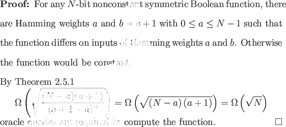

AND, OR, MAJORITY, and PARITY are all symmetric functions, and the lower bounds attained in the preceding section are all asymptotically tight. Our success leads us to investigate what we can prove about symmetric functions in general.

Depending on the value of a in Theorem 2.7.1 we may be able
to provide a better lower bound than
 (
( ). This result
was previously established by Beals et al. through a more complicated
method of polynomials [2]. No better result can be
attained for the class of all symmetric Boolean functions as Beals et
al. provide
O(
). This result
was previously established by Beals et al. through a more complicated
method of polynomials [2]. No better result can be
attained for the class of all symmetric Boolean functions as Beals et
al. provide
O( ) oracle query algorithms to compute the
symmetric functions AND and OR [2]. Our success
here leads us to apply the results of Chapter 2 to graph
properties, which are very well studied in the classical oracle query
model, in Chapter 3. While graph properties are not
necessarily ``symmetric'' in the sense of Definition 2.5.1,
they do display a kind of symmetry.
) oracle query algorithms to compute the
symmetric functions AND and OR [2]. Our success
here leads us to apply the results of Chapter 2 to graph
properties, which are very well studied in the classical oracle query
model, in Chapter 3. While graph properties are not
necessarily ``symmetric'' in the sense of Definition 2.5.1,
they do display a kind of symmetry.